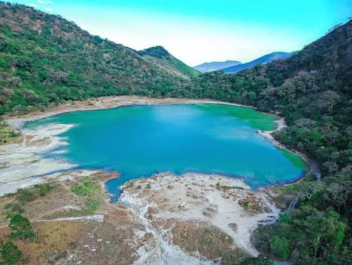
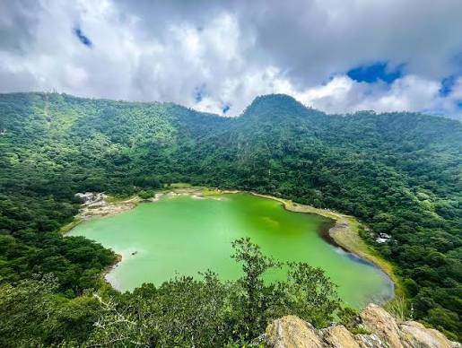
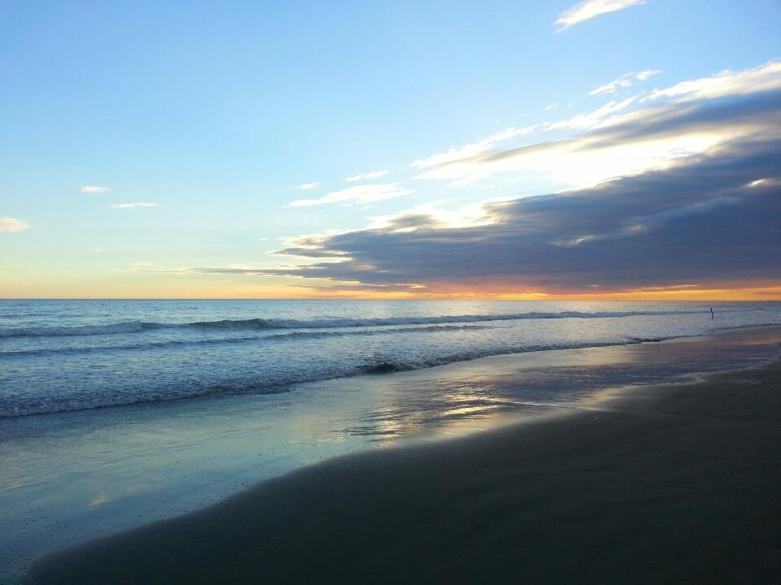
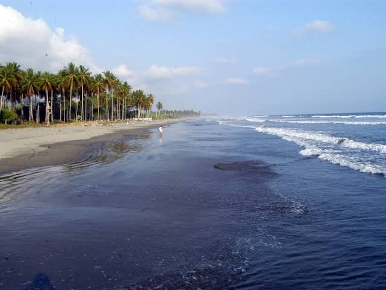
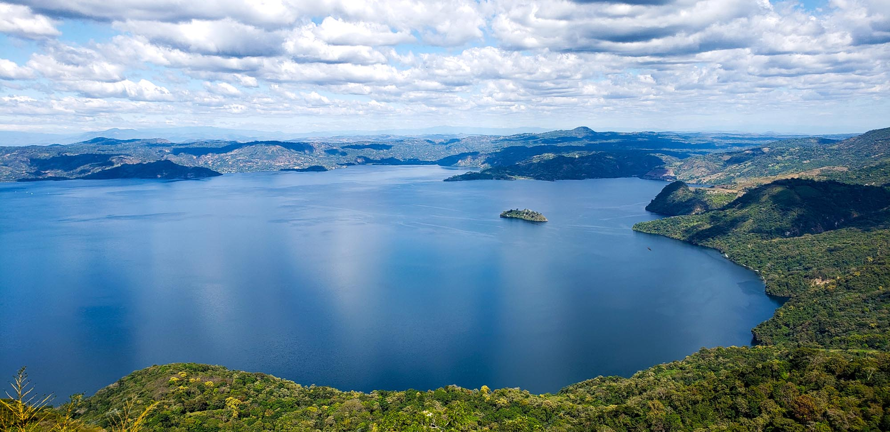
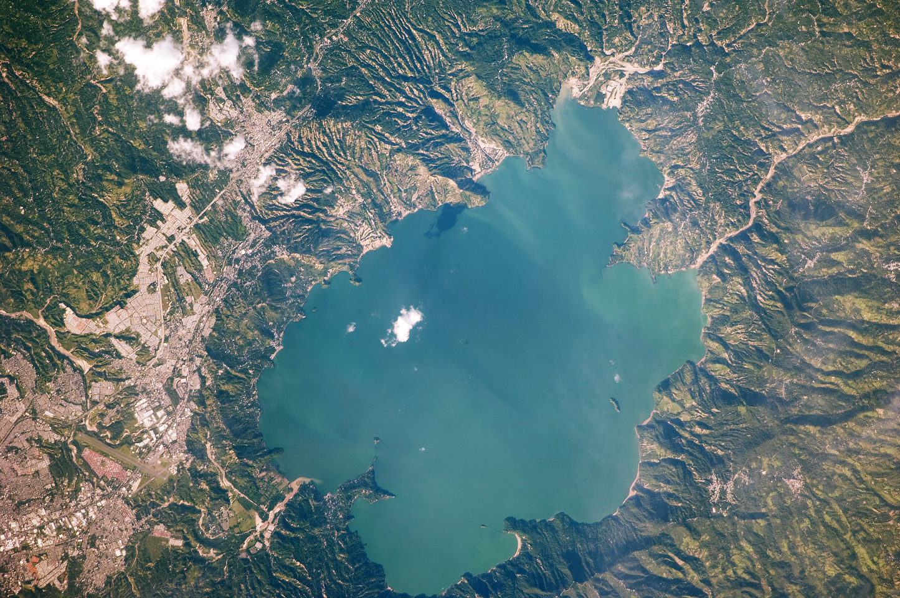

LUGARES TURISTICOS DE EL SALVADOR
1- La laguna de Alegria: La Laguna de Alegría está ubicada en el cráter del volcán Tecapa, en Usulután. Conocida como la "Esmeralda de América", destaca por sus aguas sulfurosas color verde esmeralda, neblina constante y clima fresco. Ideal para caminatas, uso de lodo volcánico (propiedades exfoliantes) y turismo de montaña.


2- Playa El Espino: es un paraíso de más de 10 kilómetros de arena fina y oleaje suave, ubicado en el distrito de Jucuarán, Usulután. Es ideal para nadar, caminar y pasear en lancha por los manglares del estero La Chepona. Se encuentra a unas 3 horas en auto desde San Salvador y cuenta con excelentes opciones para comer mariscos frescos.


3- El Centro de San Salvador comprende el área donde se inició la expansión de la ciudad capital de El Salvador desde el siglo XVI. Las edificaciones originales de la colonia española fueron en su mayor parte destruidas por desastres naturales a lo largo de los años, y los inmuebles notables que sobreviven fueron erigidos a finales del siglo XIX, e inicios del XX. Además, el lugar fue durante mucho tiempo el centro de poder político, económico y religioso del país. El terremoto del año 1986 dañó severamente la zona y, debido al aumento del desempleo en el país, ha sido ocupada por una gran cantidad de comercio informal.


4- El volcán Ilamatepec o volcán de Santa Ana es el pico más alto de El Salvador, con 2,381 metros sobre el nivel del mar. Ubicado en el Complejo Los Volcanes, destaca por su impresionante cráter con una laguna de aguas color turquesa, vistas panorámicas al lago de Coatepeque y al volcán de Izalco


5- El lago de Ilopango es el cuerpo de agua mas grande de El Salvador, es una caldera volcanica con superficie de 72 kilómetros cuadrados, mide aproximadamente 8 kilómetros de ancho por 11 kilómetros de largo. Hizo su ultima gran erupcion en el año 539 D.C. Este desastre prolongó un invierno volcánico con severas hambrunas, cielos oscurecidos y un drástico descenso de la temperatura en gran parte del hemisferio norte.

